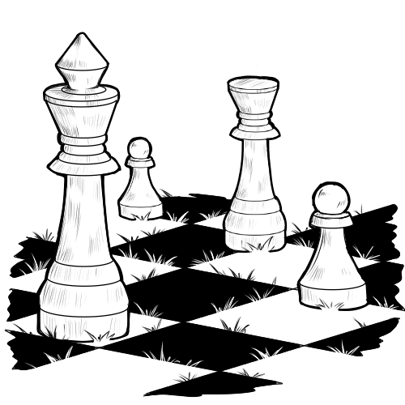
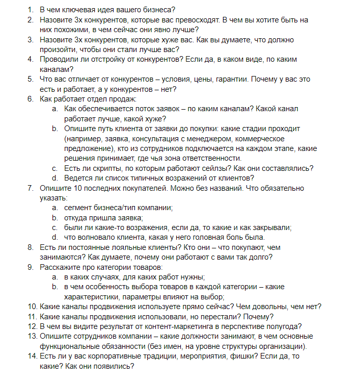
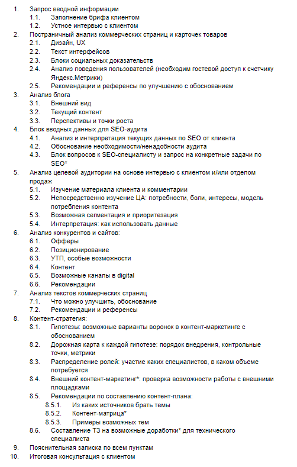

← Назад к кейсам
В апреле 2021 года со мной связался владелец интернет-магазина геотекстильной продукции с запросом на составление контент-стратегии.
Моя задача — проанализировать бизнес клиента, сайт, конкурентов, текущий контент и предложить решения, как использовать контент-маркетинг для продвижения. Вначале клиент пришел с более узким запросом на контент-стратегию для блога, и я отталкивался от этой потребности. Однако впоследствии стало ясно, что пока блог компании не нужен.
Вот, как я составлял стратегию.
Геотекстильная промышленность — это сложная тематика. Один из примеров «некрасивого бизнеса», когда сложно найти, о чем можно писать, и трудно сформулировать полезное действие от контент-активностей. Вторая сложность — b2b-аудитория, до которой сложно дотягиваться контентом. Как правило, это менеджеры, которым просто надо найти поставщика, который все привезет быстро и дешево.
Я начал анализировать нишу и выяснять, кому полезен продукт. Выяснилось, что товар могут применить очень много сегментов аудитории. Например, эти материалы используют дорожники при строительстве дорог. А еще — строители при возведении зданий. Или ландшафтные дизайнеры, если нужно, например, укрепить береговую линию.
Есть и менее весомые сегменты аудитории — дачники, которые хотят посадить газон.
Когда первичная информация была обработана, я начал составлять бриф для клиента. Это нужно, чтобы узнать подробности непосредственно о его бизнесе, УТП и процессах. У меня нет шаблонов, каждый раз я составляю новый бриф — в каждой компании есть свои особенности, и шаблонные документы тут не подходят.
Вот, как он выглядел:
Когда я получил заполненный бриф, взял перерыв, чтобы изучить ответы. По некоторым вопросам информации оказалось недостаточно, поэтому договорились на созвон с заказчиком. В течение двух часов я задавал вопросы и еще сильнее погружался в тематику.
Основные инсайты:
Также у клиента уже были достоверные данные о маркетинговых показателях. Например, был документ с четко описанными сегментами целевой аудитории, составленные по методу персон — когда указан не просто портрет, но и мотивы, боли и страхи. Это облегчило мою работу, но тем не менее, я все равно предусмотрел анализ аудитории в своем плане исследования.
Важно на берегу договориться обо всех нюансах — по какому плану работаем, кто за что отвечает, в каком виде будет результат.
Многие воспринимают контент-стратегию как волшебную таблетку. Мол, вот сейчас ее составят, там будет по пунктам расписано, что делать и куда бежать, чтобы были продажи. Но это работает чуть-чуть по-другому.
Я позиционирую контент-стратегию как документ, в котором:
Это не волшебная таблетка, это взгляд со стороны. Просто брать и внедрять все рекомендации нельзя — можно быстро потратить весь бюджет на развитие, но из-за неверных приоритетов вложения не окупятся.
Все изменения нужно вводить постепенно и относиться к ним не как к обязательным изменениям, а как к гипотезам — понимать, что они могут как подтвердиться, так и не иметь смысла.
В данном случае я не штатный специалист, а внешний консультант. Поэтому курировать весь процесс внедрения стратегии не могу. Чтобы упростить задачу клиенту, ко всем гипотезам я составил дорожную карту. Описывал необходимые изменения, перечислял KPI для отслеживания и расписывал роли и зоны ответственности.
Я составил план контент-стратегии, чтобы определить реперные точки — что от меня будет ждать Заказчик, и что он получит в итоге.
Значительную часть аудита занял постраничный анализ сайта и составление рекомендаций по улучшению UX, дизайна и шаблонов страниц.
Это важный раздел, потому что сайт влияет на поведение пользователя. Неряшливый и неудобный ресурс может оттолкнуть потенциального покупателя. Даже если контент-маркетинг будет грамотно выстроен и будет работать на привлечение аудитории, ее не получится сконвертировать и продвигать по воронке продаж.
Я изучил все разделы сайта, контент страниц и предложил варианты, что и как именно можно улучшить.
Например, я показал, как можно переписать тексты для коммерческих блоков, чтобы сделать их заметнее и понятнее. Нашел и показал грамматические ошибки в текстах. Предложил переработать шаблоны некоторых продуктовых страниц, чтобы упростить путь пользователя внутри сайта.
Еще раз отмечу, что все изменения предлагал в формате гипотез, т. е.:
Поскольку изначальный запрос был на контент-стратегию для блога, особое внимание уделил дизайну контентной части сайта. Составил блок вопросов для консультации с SEO-специалистом, чтобы сайт начал получать трафик по информационным запросам.
Однако впоследствии мы сошлись во мнении, что на данном этапе работы заказчику блог не нужен. Чтобы получить трафик, при котором он даст рентабельную конверсию в лиды, необходимы большие вложения в контент. И сейчас будет рентабельнее использовать другие схемы работы с контентом, чтобы получать более краткосрочные выгоды.
Я спроектировал и расписал 4 воронки, в которых можно использовать контент для привлечения платежеспособной аудитории. В их числе были как direct-каналы, так и охватные площадки.
Также я подробно расписал, как искать темы для контент-единиц. Например, во время беседы я выяснил, что у заказчика есть много историй на самые разные темы, связанные с бизнесом и покупателями. Эти истории являются той самой экспертизой, которую важно показывать, особенно, в b2b-сегменте. Я составил список вопросов, которые нужно задавать менеджерам по продажам, чтобы получать фактуру для кейсов.
После оформления и презентации контент-стратегии начался этап внедрения рекомендаций.
Это долгоиграющий процесс, потому что для проверки большинства гипотез нужно достаточно много времени.
Например, сейчас клиент занимается переработкой карточек товаров. Здесь нужно время не только на сбор аналитических данных, но и на непосредственно внедрение изменений — фактически, разработку новых функций для интернет-магазина.
По итогам работы: